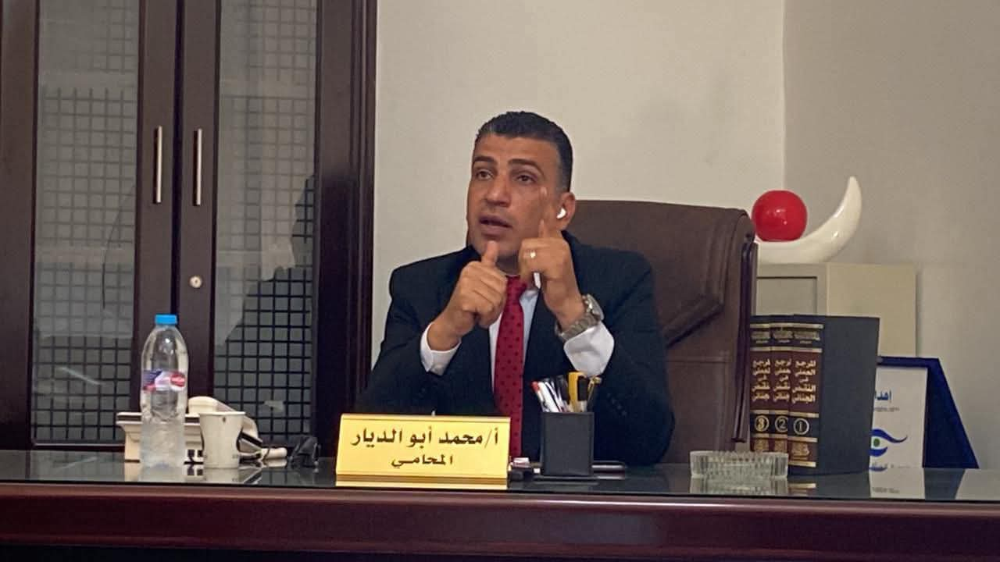

⋯ عضو اللجنة التأسيسية ⋯
حوار مع موقع المنصة
قضى محمد أبو الديار، المتحدث السابق بإسم حملة المرشح الرئاسي أحمد الطنطاوي، ٣٦٦ يومًا في السجن، وخرج ليعلن ترشحه عبر تيار الأمل في الإنتخابات البرلمانية المقبلة
أمانة التثقيف والتدريب بحزب تيار الأمل (تحت التأسيس)
كيف تدير حملة إنتخابية شعارها "يحيا الأمل. يحيا الشعب"؟ مع محمد أبو الديار مرشح مجلس النواب ٢٠٢٥، أدار هذه الجلسة من جلسات أمانة التثقيف والتدريب بحزب تيار الأمل (تحت التأسيس) د.حسنة حسن عضو الأمانة
حوار مع موقع القصة
أبو الديار يتحدث في أول حوار له بعد إستبعاد إسمه من إنتخابات مجلس النواب .. ويكشف تفاصيل جديدة عن إنتخابات الرئاسة ٢٠٢٤ وأحمد الطنطاوي